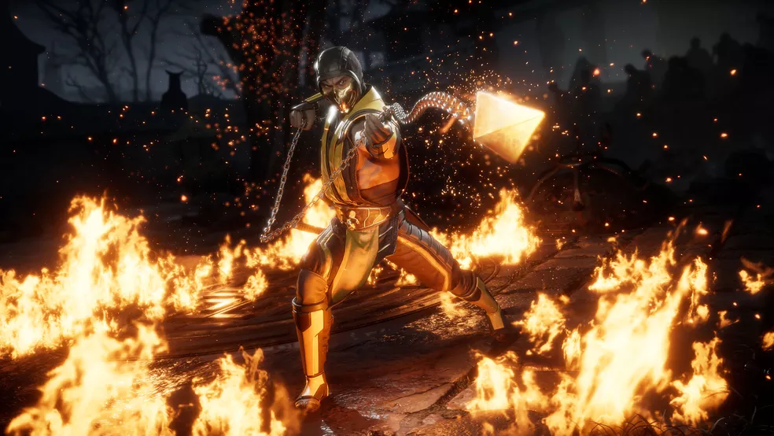
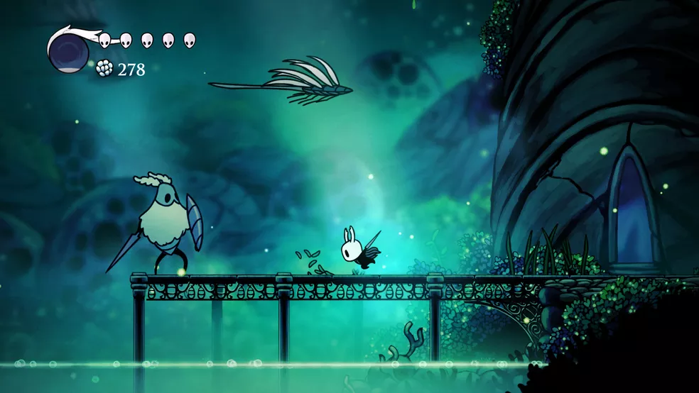
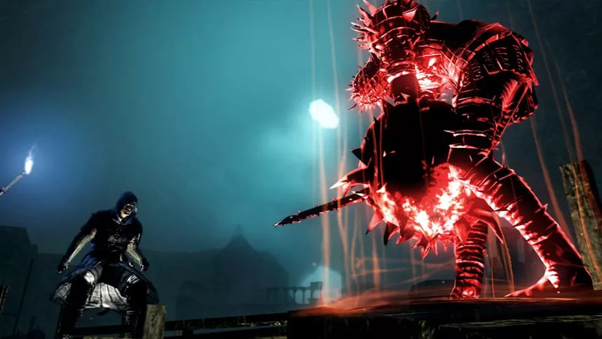

Alguns tipos de jogos
O universo dos jogos tem inúmeros gêneros diferentes, como acontece com filmes e livros, cada um definido por suas mecânicas e funcionamentos distintos. MOBA, RPG, MMORPG e FPS são os tipos mais populares atualmente, representados por nomes de peso, como Valorant e Diablo, por exemplo. Pelo seus diferentes mecanismos, um mesmo game pode se encaixar em mais de uma categoria. Conheça, nas próximas linhas, alguns dos principais gêneros e subgêneros do mercado gamer.É importante ressaltar que, nesta matéria, não são abordados todos os gêneros, somente os principais. Isso porque, o universo dos games tem proporções gigantescas e novas categorias surgem a todo o momento, com jogos cada vez mais diversificados e abrangentes.
Ação
O próprio nome sugere, esse gênero tem como sua principal característica a ação. Geralmente, os jogadores se veem no meio do confronto durante a gameplay e precisam superar desafios normalmente físicos, como batalhas diretas, por exemplo. Por ser uma categoria relativamente comum e fácil de ser encontrada, os games de ação conquistaram muita popularidade, além de diversos players ao redor do globo. Abaixo, listamos seus principais subgêneros.
Plataforma: são jogos baseados plataformas, como o nome sugere. Foram especialmente populares nos consoles dos anos 1980 e 1990. Neles, correr, pular e cair fazem parte primordial da ação. São exemplos do subgênero os conhecidos Super Mario Bros, Donkey Kong e Sonic;
Jogos de Tiro: Nesses títulos, armas são peças-chave, já que resolvem boa parte dos confrontos do game. Aqui, há ainda duas principais perspectivas: a do FPS (First Person Shooter, em inglês, ou Tiro em Primeira Pessoa, em português) e TPS (Third Person Shooter, que é Tiro em Terceira Pessoa, em PT-BR). No primeiro exemplo, o jogador não enxerga seu personagem, apenas suas ações. Já no segundo, é possível visualizar o avatar em ação. São exemplos desse subgênero Call of Duty, Battlefield e Halo (para FPS), e Fortnite e Gears of War (para TPS);
Luta: Aqui, o foco é no embate entre duas figuras. Geralmente, ele ocorre no corpo a corpo. Em sua grande maioria, esse tipo de game possui diversos personagens, cada um ostentando habilidades e funções distintas. São exemplos, aqui, os populares Mortal Kombat, Street Fighter e Tekken;
Beat-em up: Esses são jogos que também focam no combate, mas, aqui, os inimigos são divididos em hordas. Diferentemente dos games de luta, no Beat 'em up, os jogadores não enfrentam um único oponente, mas sim vários. São exemplos Scott Pilgrim vs. The World, Castle Crashers e Bayonetta;
Furtivo: Neste gênero, os jogos dão ênfase à estratégia e precisão para resolver desafios. São exemplos conhecidos desta categoria os games Dishonored, Metal Gear e Splinter Cell;
Sobrevivência: Aqui, os jogadores precisam criar estratégias para sobreviver, como desenvolver armas, construir casas e caçar animais, por exemplo. São exemplos Ark: Survival Evolved, Green Hell e The Forest;
Rítmico: Nesses games, a música é o principal elemento, e praticamente não há elementos daquela ação tradicional, que envolve combates e brigas. Guitar Hero, Just Dance e Dance Dance Revolution são os principais exemplos.
Ação e Aventura
Esse é um gênero "combinado", que conta com duas mecânicas difundidas. Por isso, geralmente há missões de longo prazo, ou coleta de itens e ferramentas, que, futuramente, serão utilizados em combates. Um exemplo disso é Hollow Knight, game em que jogadores devem vasculhar locais onde estão escondidos elementos importantes para a progressão da história, como novas habilidades ou aliados. Jogos dessa categoria normalmente têm como foco a exploração, a resolução de enigmas e as descobertas, sendo a ação um elemento adicional ao entretenimento. Confira seus principais subgêneros abaixo.
Horror e Sobrevivência: Normalmente, jogos desse gênero reúnem traços do estilo sobrevivência e do horror. Neles, os jogadores possuem recursos limitados, como armas e munições. São exemplos Resident Evil, Amnesia e Dead by Daylight;
Metroidvania: Aqui, a história do game não é linear. Por isso, os jogadores precisam, eventualmente, descobrir habilidades, armas, aliados ou itens para avançar em alguns cenários. Dessa forma, novos locais são desbloqueados conforme o player progride. Ori and the Blind Forest, Hollow Knight e Dead Cells são os principais exemplos.
RPG
Os RPGs normalmente apresentam características medievais ou fantasiosas. Parte desse fato se deve à origem do gênero, ligada a Dungeons & Dragons. Não é impossível, no entanto, encontrar games que adicionem novas temáticas ao estilo do jogo, como acontece com Mass Effect e Fallout. Alguns dos seus principais subgêneros são:
RPG de Ação: Esse gênero mistura elementos dos jogos de ação e aventura. Sua principal característica são os combates em tempo real. São exemplos aqui Cyberpunk 2077, Dark Souls e Fallout;
MMORPG: A maior característica desse gênero é a presença de diversos usuários no mesmo servidor. Usualmente, os jogadores compartilham objetivos similares. World of Warcraft, Final Fantasy e Tera são exemplos desta categoria;
Rouguelikes: Aqui, é usual que as mortes de gameplay sejam permanentes – ou seja, quando morre, o jogador retorna ao início do jogo. Outras características envolvem a geração de níveis aleatórios e a repetição como forma de aprimorar as habilidades do seu avatar. São exemplos Dead Cells, Hades e Rogue;
RPG Sandbox: São RPGs em "mundos abertos", em que jogadores podem vasculhar um ambiente gigantesco em busca de novas aventuras e missões. É uma experiência mais envolvente, devido ao número de afazeres e riqueza de detalhes. The Elder Scrolls V: Skyrim, The Witcher 3: Wild Hunt e New World são os principais exemplos do mercado atualmente.
Simulação
Jogos de simulação existem pelo menos desde meados da década de 1970 e buscam recriar situações do cotidiano em suas histórias. Em alguns títulos desse gênero, você precisa trabalhar, construir sua própria casa e constituir uma família. Por conta disso, ele acaba englobando as características de sandbox, de construção de mundos e até mesmo de realidade virtual. Veja, em seguida, alguns subgêneros da categoria.
Simulação de Construção e Gestão: Normalmente, aqui, os jogadores são colocados para administrar uma cidade do zero. Os usuários têm que construir ruas, casas, escolas, departamentos de polícia, estações de tratamento de água e outros edifícios, para ganhar mais experiência. São exemplos SimCity, Tropico 4 e Cities Skylines;
Simulação de Vida: Como o próprio nome diz, os jogadores conseguem simular toda uma vida no ambiente virtual. Em alguns jogos, é possível alterar as reações dos personagens, além de casar, trocar de empregos e muitas outras atividades presentes na vida real. The Sims, Habbo e BitLife são exemplos desse subgênero;
Simulação de Veículos: Nesta categoria, estão presentes todos os games que simulam veículos, sejam estes terrestres, como carros e caminhões, aéreos, como aviões e helicópteros, ou marítimos, como navios e submarinos. Os principais exemplos são Microsoft Flight Simulator e Euro Truck Simulator.